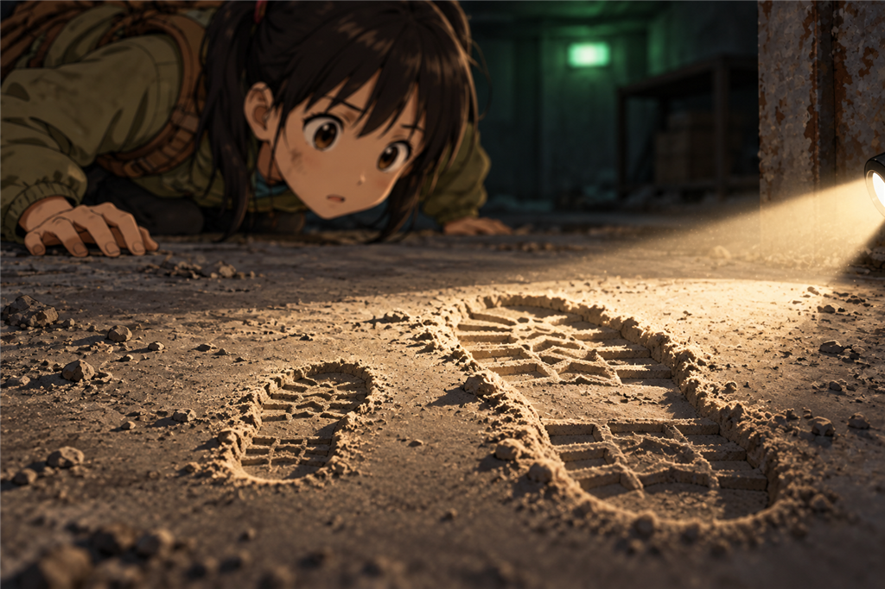
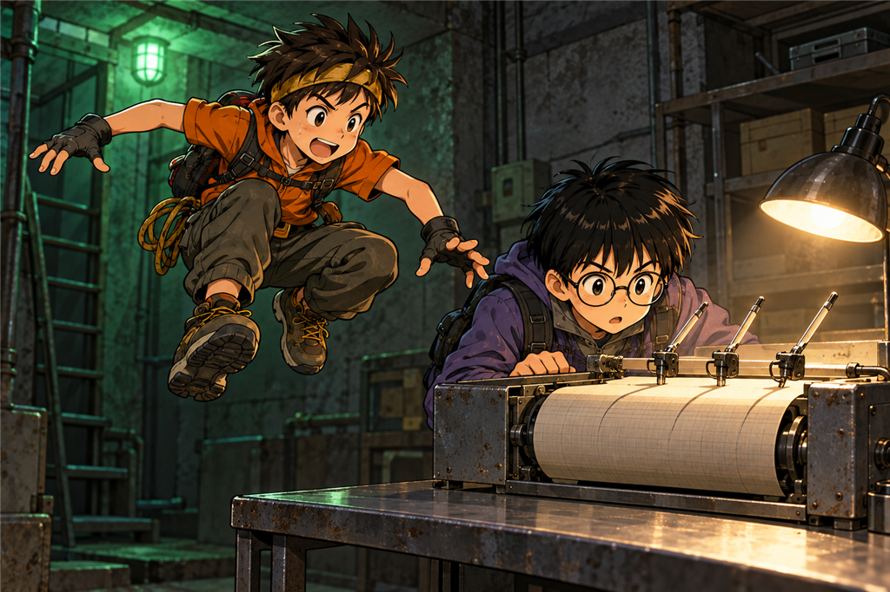
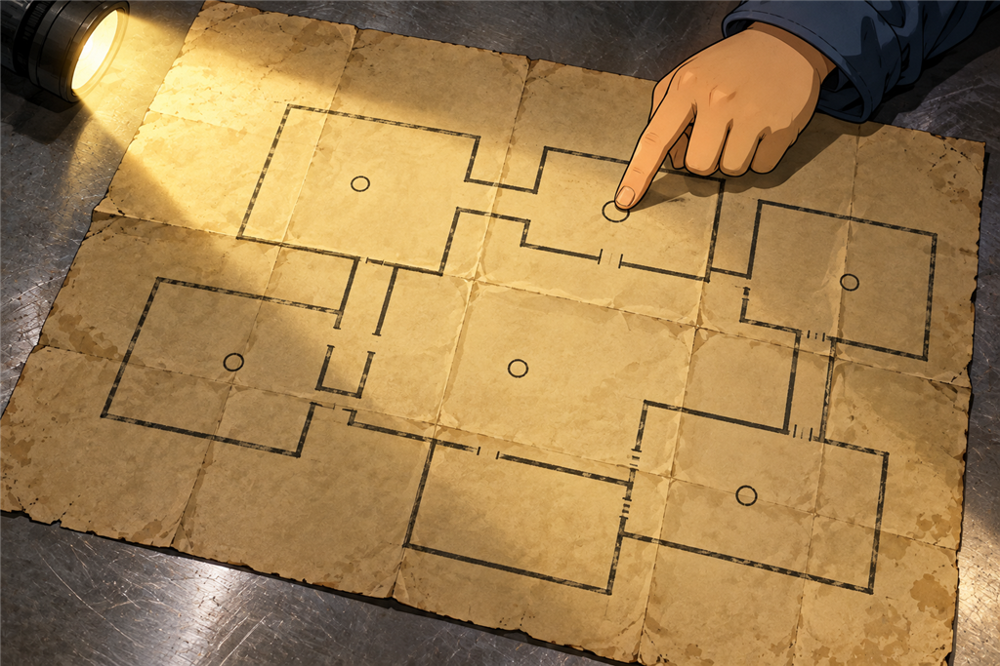

คนที่หก
เวลาอ่านประมาณ 11 นาที · Evidence / Hypothesis
บรรทัดนั้นค้างอยู่กลางจอ
ข้างบนมันคือบรรทัดสิบเอ็ดวินาที ข้างล่างก็บรรทัดสิบเอ็ดวินาที มีแต่มันบรรทัดเดียวที่โผล่ขึ้นมาไม่ตรงจังหวะ
“สองคืนก่อน ตีสองสี่สิบเอ็ด” ปั้นอ่านซ้ำอีกครั้ง
“คืนที่เรานอนบนเนิน” มีนาพูด
ต้นกล้ายืนกอดอกอยู่ที่มุมของตัวเอง “ตอนนั้นประตูยังปิดอยู่เลยนะ เราเพิ่งเปิดมันเมื่อวาน”
“ใช่”
“แล้วจะมีอะไรขยับอยู่ข้างในได้ล่ะ”
ไม่มีใครตอบ
นนท์ยืนมองบรรทัดนั้นนานกว่าใคร แล้วพูดขึ้นช้า ๆ
“เราเดาได้สามอย่าง” เขาพูด “หนึ่ง เครื่องมันเพี้ยนเอง สอง มีอะไรในสถานีขยับโดยไม่มีคนทำ สาม...”
เขาไม่ได้พูดข้อสามออกมา
“สามคือมีคน” ปั้นต่อให้
“ใช่”
มีนาขยับเข้ามาใกล้ลำแสงไฟฉายโดยไม่รู้ตัว
“แล้วเราจะรู้ได้ยังไงว่าอันไหนถูก” ฟ้าถาม
“เดาสามอย่างแล้วเถียงกันทั้งวันก็ไม่รู้” นนท์ตอบ “ต้องหาของจริงมาดู”
1
พวกเขาเดินกลับเข้าห้องแผนที่
คราวนี้นนท์ไม่ให้ใครเดินชิดผนังเหมือนเมื่อเช้า เขาให้ทุกคนหยุดอยู่ตรงปากทางเดิน
“เมื่อเช้าเราเดินกันตรงไหน”
“ชิดผนังซ้าย” ปั้นตอบ “แล้วก็ไปยืนหน้าแผง”
“ตรงกลางห้องมีใครเดินไหม”
ทุกคนนึกย้อน แล้วส่ายหน้าพร้อมกัน
“งั้นตรงกลางห้องยังเป็นฝุ่นเดิม” นนท์พูด “มีนา”
มีนาคุกเข่าลงที่ปากทางเดินแล้วก้มต่ำจนแก้มเกือบแตะพื้น เธอให้ต้นกล้าถือไฟส่องกราดไปตามพื้นในระดับต่ำ ๆ แทนที่จะส่องลงตรง ๆ
“ต่ำกว่านี้อีก” เธอบอก “ให้แสงมันเลียพื้นไป”
ฝุ่นบนพื้นห้องแผนที่หนากว่าในห้องโถง และพอแสงกราดผ่าน พื้นที่เคยดูเรียบก็กลายเป็นอีกแบบหนึ่งทันที
มีรอยอยู่บนนั้น
รอยเท้า
มีนานิ่งไปสองวินาที แล้วเสียงเธอก็เปลี่ยนไป “ต้นกล้า อย่าขยับไฟ”
รอยเท้าไม่ได้มีรอยเดียว มันเป็นแนวยาว เริ่มจากกลางห้องแล้วทอดออกไปทางผนังฝั่งขวาของห้อง ไปจนถึงช่องมืด ๆ ช่องหนึ่งที่เมื่อเช้าไม่มีใครมองเลยเพราะทุกคนจ้องแผนที่กันหมด
“มันมีทางออกอีกทาง” ปั้นพูด
ฟ้าขยับมาเกาะแขนมีนา “รอยเท้าของใครคะ”
“ยังไม่รู้” มีนาตอบ แต่มือเธอที่ถือสมุดสั่นนิดหนึ่ง

แสงที่ส่องตรงไม่เห็นอะไรเลย แต่แสงที่กราดเลียพื้นเห็นทุกอย่าง
2
ต้นกล้าก้าวเข้าไปจะดูใกล้ ๆ นนท์คว้าเสื้อเขาไว้ทัน
“อย่าเหยียบ”
“เราแค่จะดู”
“นายเหยียบรอยทับรอยเดียว เราก็เสียมันไปตลอดกาล”
ต้นกล้าถอยกลับมา
พวกเขายืนดูจากปากทางเดินอยู่พักหนึ่ง แล้วฟ้าก็ถามคำถามที่ง่ายที่สุดและสำคัญที่สุดในตอนนี้
“รอยของพวกเราเองหรือเปล่าคะ”
ต้นกล้าหันขวับ “เป็นไปไม่ได้ เราไม่ได้เดินตรงกลางห้อง”
“แต่เราก็จำไม่ได้ทุกก้าวนะ” มีนาตอบ “เมื่อเช้าเราตื่นเต้นกันมาก ใครจะไปจำได้ว่าตัวเองเดินตรงไหน”
ต้นกล้าเงียบ
ปั้นเปิดสมุดขึ้นมา “เราต้องตรวจก่อน ไม่งั้นเราจะตกใจกันไปเปล่า ๆ แล้วถ้าเราด่วนสรุปตอนนี้ เราก็เลิกหาต่อ”
🧠 หยุดคิดสักครู่
ทีมพบรอยเท้าในห้องที่พวกเขาเคยเข้ามาแล้วเมื่อเช้า แต่ไม่มีใครจำได้ว่าตัวเองเดินตรงไหน
ถ้าเป็นเรา จะทำยังไง?
A. สรุปว่าเป็นรอยของพวกเราเอง เพราะเราห้าคนเดินกันอยู่ในนี้ทั้งเช้า
B. สรุปว่ามีคนอื่นอยู่ในนี้ แล้วรีบวิ่งขึ้นบันไดทันที
C. ทำรอยเท้าของพวกเราเองขึ้นมาเทียบ วัดขนาดให้ชัด แล้วค่อยสรุป
เลือกไว้ในใจก่อน แล้วค่อยอ่านต่อนะ
3
พวกเขาเลือก C
ต้นกล้าหาพื้นที่ฝุ่นหนา ๆ อีกมุมหนึ่งของห้อง ห่างจากแนวรอยเดิม แล้วทุกคนก็เดินเหยียบลงไปคนละสองก้าว
“เราทำรอยปลอมเพื่ออะไร” เขาถาม
“ไม่ใช่รอยปลอม” ปั้นตอบ “เป็นรอยที่เรารู้แน่ ๆ ว่าของใคร เอาไว้เทียบ”
จากนั้นก็ถึงเวลาวัด
ไม่มีไม้บรรทัดยาวพอ พวกเขาจึงใช้เชือกเหมือนตอนวัดลำธารบนแผนที่ ต้นกล้าทาบเชือกตามความยาวของรอย หนีบไว้ด้วยนิ้ว แล้วเอามาทาบกับไม้บรรทัดเล็กในชุดอุปกรณ์
ปั้นจดตัวเลขลงสมุดทีละแถว
รอยของฟ้าสั้นที่สุด รอยของปั้นยาวขึ้นมาหน่อย แล้วก็ต้นกล้า มีนา และนนท์ที่ยาวที่สุดในกลุ่ม
แล้วเขาก็วัดรอยที่อยู่กลางห้อง
เขาวัดสองรอบ ตรวจอีกรอบ แล้วเงยหน้าขึ้น
“ยาวกว่ารอยของนนท์อีกเกือบหนึ่งฝ่ามือ”
ไม่มีใครพูดอะไร
มีนาคุกเข่าเทียบลายพื้นรองเท้า “ลายก็ไม่เหมือนของใครเลย” เธอชี้ “ของเราเป็นลายหยัก ๆ ทั้งห้าคน อันนั้นเป็นลายขวางหนา ๆ”
“แล้วมันลึกกว่าด้วย” ปั้นเสริม “ฝุ่นในรอยถูกกดลงไปจนเห็นพื้นข้างใต้ รอยของเราไม่มีใครลึกขนาดนั้น”
“ลึกกว่าแปลว่าอะไร” ต้นกล้าถาม
“แปลว่าหนักกว่า”
ต้นกล้ากลืนน้ำลาย “หนักกว่าเรา...”
“หนักกว่าเราทุกคน” นนท์ตอบ
ฟ้ามองแนวรอยเท้าที่ทอดไปสู่ช่องมืด “แล้วช่วงก้าวเขายาวมากเลยนะคะ”
ปั้นหันมามองเธอ แล้วรีบวัดระยะระหว่างรอยทันที
มันยาวกว่าช่วงก้าวของนนท์เกือบครึ่งเท่า
“เป็นผู้ใหญ่” ปั้นพูด
4
มีนานั่งลงกับพื้นแล้วกอดเข่าตัวเอง
“สองคืนก่อนเรานอนกันข้างนอก” เธอพูดเสียงเบามาก “แล้วมีผู้ใหญ่คนหนึ่งเดินอยู่ในนี้ ใต้เท้าเราเลย”
“เรายังไม่รู้ว่าคืนนั้น” นนท์บอก
“แต่บรรทัดในจอมันบอกเวลาตีสองสี่สิบเอ็ด”
“บรรทัดนั้นบอกว่ามีอะไรขยับ มันไม่ได้บอกว่าเป็นคนเดิน” นนท์ตอบ “รอยเท้าก็บอกว่ามีคนเดิน แต่ไม่ได้บอกว่าเดินเมื่อไร”
เขามองทุกคน
“เรามีของสองอย่างที่ยังไม่ได้ต่อกัน”
ต้นกล้าทำหน้าเหนื่อย “แล้วจะต่อยังไงล่ะ”
ปั้นลุกขึ้นยืนทันที
“กระดาษ”
“อะไรนะ”
“เครื่องในนั้นมันวัดพื้นดิน” ปั้นพูดเร็วกว่าปกติ “มันวัดทุกสิบเอ็ดวินาที มันจดลงกระดาษมาหกวัน”
นนท์เข้าใจก่อนคนอื่น “ถ้าคนเดินหนักขนาดนั้น...”
“พื้นก็สั่น” ปั้นพูดจบประโยคให้ “แล้วถ้าพื้นสั่น กระดาษก็ต้องเห็น”
5
พวกเขากลับไปคลี่กระดาษออกบนพื้นอีกครั้ง คราวนี้ไม่มีใครบ่นว่ามันยาว
แต่ก่อนจะไปหาคืนนั้น นนท์หยุดทุกคนไว้ก่อน
“เราต้องรู้ก่อนว่าคนเดินหน้าตาเป็นยังไงบนกระดาษ ไม่งั้นเราจะมองหาของที่เราไม่รู้จัก”
เขาหันไปมองปากกาสามด้ามที่แห้งสนิทบนเครื่อง
“แต่มันเขียนไม่ได้แล้ว หมึกแห้ง”
“ไม่ต้องให้มันเขียนก็ได้” ปั้นตอบ “แค่ดูว่าแขนมันขยับแค่ไหนก็พอ”
พวกเขาจึงทำการทดลองที่ง่ายที่สุดในทั้งซีซั่น
ปั้นนั่งเฝ้าแขนปากกาทั้งสามอันไว้ ส่วนคนอื่นไปยืนห่างออกไปแล้วเดินผ่านทีละคน
ฟ้าเดินก่อน แขนปากกาแทบไม่ขยับ
ปั้นเรียกมีนา แขนขยับขึ้นนิดเดียว
ต้นกล้าเดิน ขยับชัดขึ้น
“กระโดดสิ” ปั้นบอก
ต้นกล้ากระโดดหนึ่งครั้ง แขนปากกาเด้งขึ้นสูงแล้วตกลง
“เห็นแล้ว” ปั้นจดลงสมุด “คนเดินทำให้เกิดยอดแหลมเล็ก ๆ เรียงกันเป็นชุด ยอดห่างกันเท่า ๆ กันตามจังหวะก้าว”
ฟ้าตาโต “ยอดพวกนี้คือรอยเท้าบนกระดาษเหรอคะ”
“ประมาณนั้นเลย”
จากนั้นพวกเขาก็ไล่หาช่วงของคืนนั้นบนกระดาษ โดยนับขีดย้อนจากแถบฟันเลื่อยที่เป็นฝนวันแรก
ปั้นคลานไปตามแนวกระดาษอย่างช้า ๆ ผ่านช่วงที่ขยุกขยิกเรียบ ๆ ไปเรื่อย ๆ
แล้วเขาก็หยุด
บนเส้นหมึกตรงนั้นมียอดแหลมเล็ก ๆ เรียงกันเป็นชุด ห่างกันเท่า ๆ กัน นับได้สิบกว่ายอด แล้วเงียบไป แล้วมีอีกชุดหนึ่งตามมา
มีนาเอามือปิดปากตัวเอง
“มันเหมือนของต้นกล้าเลย” ฟ้ากระซิบ
“ไม่เหมือน” ปั้นตอบ “ของต้นกล้ายอดเตี้ยกว่า แล้วยอดก็ชิดกว่า”
เขาเงยหน้าขึ้น
“อันนี้ยอดสูงกว่า แปลว่าหนักกว่า แล้วยอดห่างกว่า แปลว่าก้าวยาวกว่า”
ตรงกับรอยเท้าทุกอย่าง
นนท์นั่งลงกับพื้นข้างกระดาษ
“ตอนนี้เราต่อสองอย่างเข้ากันได้แล้ว” เขาพูด “ตีสองสี่สิบเอ็ดของคืนนั้น มีคนเดินอยู่ในสถานีนี้จริง ๆ”

ก่อนจะอ่านรอยเท้าของคนอื่น ต้องรู้ก่อนว่ารอยเท้าของตัวเองหน้าตาแบบไหน
6
คำถามต่อไปมาจากต้นกล้า และเป็นคำถามที่ทุกคนกลัวที่สุด
“แล้วเขาออกไปหรือยัง”
ห้องเงียบลงจนได้ยินเสียงพัดลมเบา ๆ จากหลังประตูบานขวาในห้องโถง
“ประตูใหญ่ปิดอยู่ตั้งแต่ก่อนเรามา” มีนาพูด “เราต้องใช้แผ่นลูกศรเปิดมันเองเมื่อวาน”
“แล้วกล่องเหล็กก็ปิดทางเดินไว้” ปั้นเสริม “เขาปิดจากข้างนอกเข้ามา แปลว่าตอนปิดเขาอยู่ข้างนอก”
“งั้นเขาก็ออกไปแล้ว” ต้นกล้าพูดด้วยความโล่งใจ
“ถ้าเขาออกทางประตูใหญ่” นนท์ตอบ
ทุกคนหันไปมองแนวรอยเท้าในห้องแผนที่ ที่ทอดไปสู่ช่องมืดอีกฝั่งหนึ่งของห้อง
ไม่มีใครพูดอะไร
นนท์เป็นคนตัดสินใจ และเขาตัดสินใจเร็วกว่าที่เคยทำมาทั้งสามวัน
“เราไม่เดินตามรอยนั้น”
ต้นกล้าหันมา “ทำไมล่ะ เราเพิ่งรู้ว่ามีคนอยู่นี่”
“นั่นแหละเหตุผล” นนท์ตอบ “เมื่อวานเราไม่เปิดประตูที่ไม่รู้จัก เพราะเราไม่รู้ว่าข้างในมีอะไร วันนี้เรารู้ว่าข้างในอาจมีคนที่เราไม่รู้จัก มันยิ่งต้องไม่ไป”
“แต่เขาอาจช่วยเราได้นะ”
“หรืออาจไม่ช่วย” มีนาพูด “เราไม่รู้จักเขาเลยสักนิดเดียว รู้แค่ว่าเขาตัวใหญ่กว่าเราทุกคน แล้วเขาเอากล่องมาปิดทางเดินไว้”
นนท์วางกฎใหม่ตรงนั้นสี่ข้อ
ข้อหนึ่ง ไม่มีใครแยกไปไหนคนเดียว ไม่ว่าจะไปไกลแค่ไหน
ข้อสอง ทางขึ้นบันไดต้องโล่งตลอดเวลา ห้ามวางของขวาง
ข้อสาม ถ้าเจอเขา ทุกคนขึ้นบันไดทันทีโดยไม่ต้องคุยกับเขา แล้วไปหาครูให้ได้ก่อน
ข้อสี่ จากนี้ไปทุกคนนอนในห้องโถงเท่านั้น ไม่เข้ามานอนในนี้
“แล้วเราจะทำอะไรต่อ” ฟ้าถาม
“ทำงานเดิม” นนท์ตอบ “เราต้องบอกคนข้างนอกเรื่องเนินฝั่งตะวันออกให้ได้ นั่นยังไม่เปลี่ยน”
ก่อนออกจากห้องแผนที่ ปั้นเอาหินก้อนเล็ก ๆ สี่ก้อนมาวางเรียงรอบรอยเท้าที่ชัดที่สุด ไม่ให้ใครเผลอเหยียบมันในครั้งต่อไป
แล้วมีนาก็หยุดอยู่หน้าโต๊ะเหล็ก
บนโต๊ะ ใต้กองกระดาษที่พวกเขาเพิ่งพับเก็บ มีกระดาษแข็งแผ่นหนึ่งที่เมื่อเช้าไม่มีใครเห็นเพราะมันอยู่ใต้กอง
เธอดึงมันออกมาแล้วคลี่บนโต๊ะ
เป็นแบบแปลนของสถานีนี้ มองจากด้านบน มีห้องโถง มีบันได มีทางเดิน มีห้องแผนที่ที่พวกเขากำลังยืนอยู่ และมีห้องอีกหลายห้องที่พวกเขายังไม่เคยเห็น
และในห้องโถง มีวงกลมเล็ก ๆ ห้าวงกระจายอยู่ มีเลขหนึ่งถึงห้ากำกับไว้
“เซนเซอร์” ปั้นพูดทันที
วงที่หนึ่งถึงสี่อยู่ที่สี่มุมห้องโถง ตรงกับกล่องบนเพดานที่พวกเขาเจอเมื่อสองวันก่อนพอดี
ส่วนวงที่ห้าไม่ได้อยู่ในห้องโถง
มันอยู่หลังเส้นที่แทนประตูบานขวา
ประตูบานที่ไม่มีใครเคยเปิด
บานที่มีเสียงพัดลมเบา ๆ ดังอยู่ตลอดสามวัน
บานที่ไฟดวงที่ห้าบนผนังติดค้างอยู่ตั้งแต่คืนแรก

เซนเซอร์ตัวที่ห้าไม่ได้อยู่ในห้องโถง
🔬 วิทยาศาสตร์ในตอนนี้
แสงที่ส่องกราดขนานกับพื้นผิวทำให้เห็นรอยที่แสงตรงมองไม่เห็น เพราะรอยนูนและรอยกดจะเกิดเงาเล็ก ๆ ของตัวเองขึ้นมา หลักการเดียวกับที่ใช้อ่านรอยขูดบนป้ายโลหะ
ก่อนบอกว่าหลักฐานชิ้นหนึ่งผิดปกติ ต้องมีของปกติไว้เทียบก่อน การทำรอยเท้าของตัวเองขึ้นมาวัดไม่ใช่การเสียเวลา มันคือสิ่งที่ทำให้คำว่า "ใหญ่กว่า" และ "หนักกว่า" มีความหมายจริง ๆ ไม่ใช่แค่ความรู้สึก
หลักฐานแต่ละชิ้นตอบได้ไม่เท่ากัน บันทึกในเครื่องบอกเวลาแต่ไม่บอกว่าเกิดอะไร รอยเท้าบอกว่าเกิดอะไรแต่ไม่บอกเวลา การเอาสองอย่างมาต่อกันได้คือสิ่งที่ทำให้สมมติฐานหนักแน่นขึ้น
เครื่องมือวัดต้องถูกสอบเทียบก่อนใช้ การเดินและกระโดดให้ตัวเองดูว่าเข็มขยับแค่ไหน ทำให้ทีมรู้ว่ารอยของคนหน้าตาเป็นแบบไหน ก่อนจะไปอ่านรอยของคนที่ไม่รู้จัก
ถ้ารู้ว่าอาจมีคนแปลกหน้าอยู่ในที่ปิด อย่าตามไปหา ให้อยู่รวมกัน รักษาทางออกให้โล่ง และไปบอกผู้ใหญ่ที่ไว้ใจได้ก่อนเสมอ ความอยากรู้รอได้ แต่ความปลอดภัยรอไม่ได้
จบตอนที่ 12
ช่วยให้ทีม ZERO เดินทางต่อ ☕
ถ้าตอนนี้ทำให้คุณสนุก สนับสนุนค่าเวลาเขียนและภาพประกอบได้ตามสะดวกครับ
สนับสนุนทีม ZERO